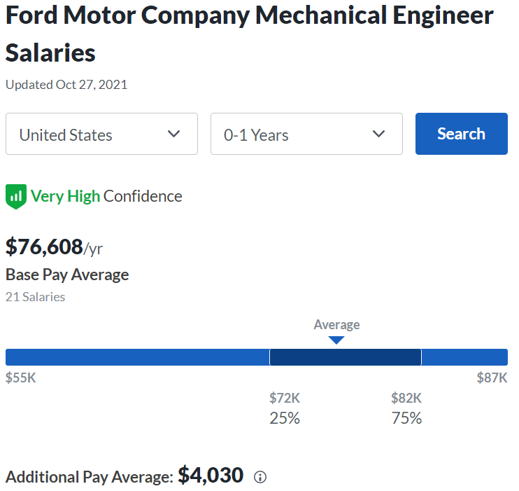
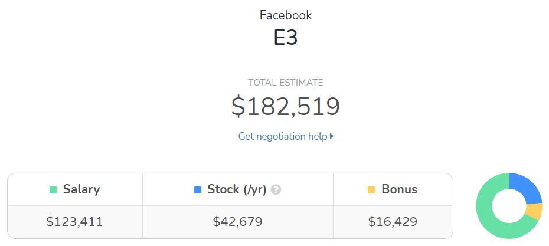

This book is for informational purposes only. Except when an external source is cited, everything in the book is the author’s opinion. The author makes no guarantee about the correctness or accuracy of any content in this book. Furthermore, you may disagree with and/or find certain content offensive.
Read at your own risk. Do not continue reading if you do not accept full responsibility for all actions you take as a result of reading this book. The author is not liable for any damages including, but not limited to, academic failures, career path mistakes, financial loss, feeling upset, and physical/mental injury.
Wouldn’t it be great if you had a job with the following traits?
If that’s your job, then congratulations! I’m not sure why you are browsing through this book, but thank you for your patronage.
I bet you haven’t talked to anyone with that kind of job. For most people, that kind of job is simply a dream. It’s a dream because it perfects all three major dimensions of a job: impact, enjoyment, and money. Let’s discuss the three dimensions next.
Impact is the effect your work has on the world. For example, working on a lifesaving vaccine or on self-driving cars can be considered high-impact.
Impact is the most difficult of the three dimensions to achieve. In traditional non-software industries, impact requires you to be stronger at something than the majority of other people and that skill has to solve a pressing issue. An example would be working at a pharmaceutical company to develop a lifesaving drug. To contribute to drug development, you need specialized skills such as a Master’s or PhD degree in biology. The degree requirement immediately blocks out a lot of candidates. Furthermore, if you do achieve the required advanced degree, you’ve become highly-specialized and your skills do not extend well to other industries. Achieving the high-impact dimension in non-software industries limits your potential impact elsewhere and you run the risk of becoming unemployed with zero impact during an economic downturn.
Software is also high-impact both in its pure form and when applied to other industries; however, unlike other industries, software has exceptional versatility and a lower bar for entry. In pure form, consider the word processor, the internet browser, or Facebook. In applied form, consider computer simulations used for drug development research and all the digital displays in your car. The cherry on top is that you usually only need a Bachelor’s degree in computer science. You can achieve high-impact with a Bachelor’s in CS and without losing any versatility because nearly every industry relies on software.
Enjoyment is liking what you do at your job. As the saying goes, “find a job you love and you will never have to work a day in your life.”
Enjoyment is the easiest of the three dimensions to achieve. You can guarantee enjoyment right now by quitting your current job and becoming self-employed doing whatever you enjoy the most. Of course, that’s rarely a sensible course of action because, as we’ll discuss in a later chapter, enjoyment needs to be balanced with the other two dimensions.
The amount of enjoyment you get from writing software depends on you. Unfortunately, there’s no pill you can take that will suddenly make you enjoy writing software; however, know that you don’t have to enjoy writing software and you don’t have to hate it either. As an analogy, I clean my dishes after every meal. I don’t enjoy washing my dishes because it gets my hands mucky, but I don’t hate doing dishes either because I want a clean house. We’ll leave it at that for now and we’ll discuss your mindset further in the next chapter.
Finally, let’s talk about money: the most tangible of the three dimensions. Money is how much your job pays. You need money for shelter, food, entertainment, and anything else you want to buy.
Most jobs requiring a Science, Technology, Engineering, or Math (STEM) degree will pay around $80,000 USD on the high-end right out of college. For example, here is the average new-graduate mechanical engineer’s salary at the famous Ford Motor Company:

(source: Glassdoor, around December 2021) [1]
You can confirm this estimate on Glassdoor by checking out the salaries of non-software positions at any reputable company and filtering the salaries down by 0-1 years of experience.
Unlike other industries, software is the career path with the highest upside. Levels.fyi is a public database of software salaries. Let’s take a look at entry-level salaries for Facebook:

(source: Levels.fyi, around December 2021) [2]
E3 is the new-graduate software engineering level at Facebook and the average compensation package is over $180,000 USD per year. Only a Bachelor’s degree is required and this rate doesn’t factor in free meals, free fitness centers, free shuttles to work, high 401(k) matching, amazing health insurance, a 40-hour workweek and plenty of on-the-job mentorship. The only other industries that come close are investment banking and private equity which require 80 hour workweeks and getting yelled at by your superiors.
Even Ford Motor Company, which produces cars, pays a higher new-graduate salary for software than for mechanical engineering. And at less-known software firms, many software engineer salaries start at $100,000. No industry comes close to the software industry’s salaries when comparing positions of similar reputation.
If you’re entering college or attending college right now, have you asked yourself why you’re attending college? If your answer is because your parents said so, or to attend football games, or to party until you drop, hopefully you will reconsider the time and money investment you are making. A four-year program at a private institution can cost over $300,000!
The correct reason for attending college is to pick up skills necessary to live a successful and fulfilling life after you graduate. Unless your parents are immensely wealthy, that means you have to get a solid job after graduating.
Take some time to think about the best, realistic job for you. Which dimensions matter the most to you and what tradeoffs are you willing to make? In the next chapter, we’ll look at the theoretical life of a software engineer and the tradeoffs she might make for her job.